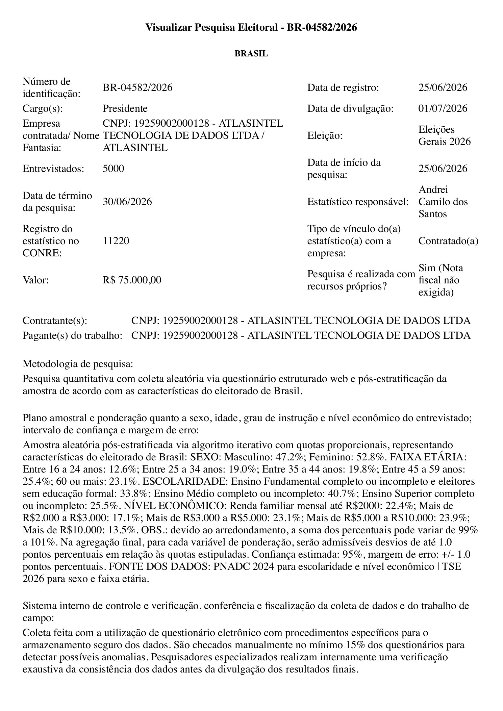
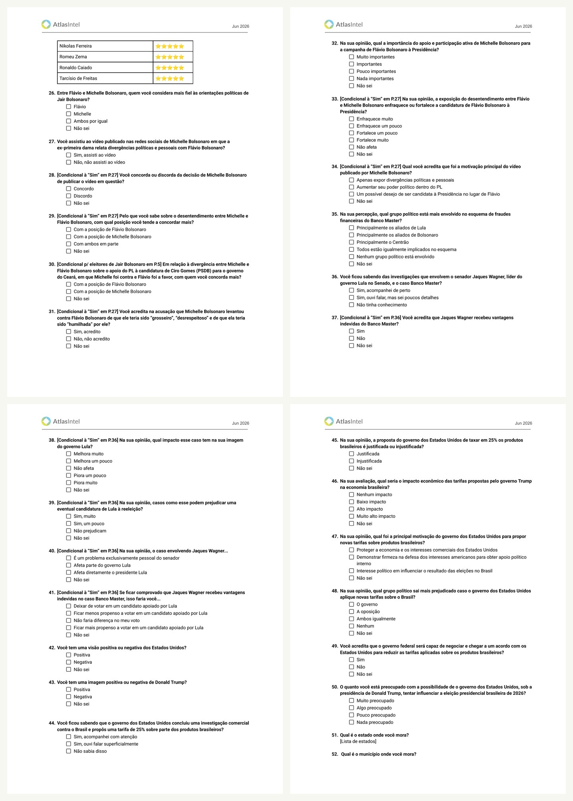
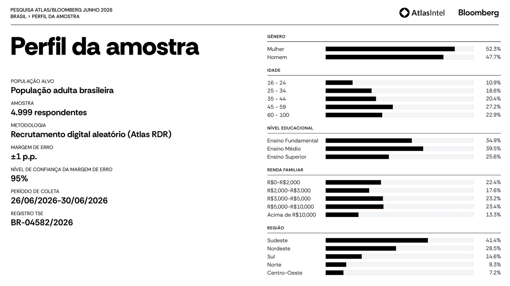
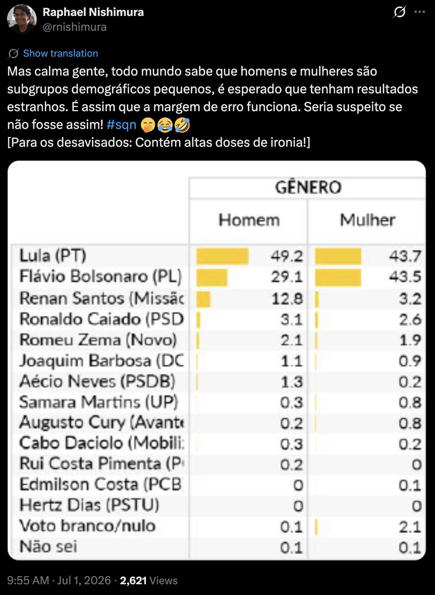
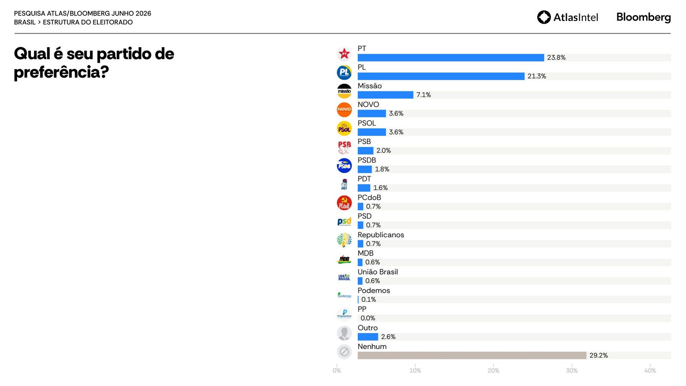
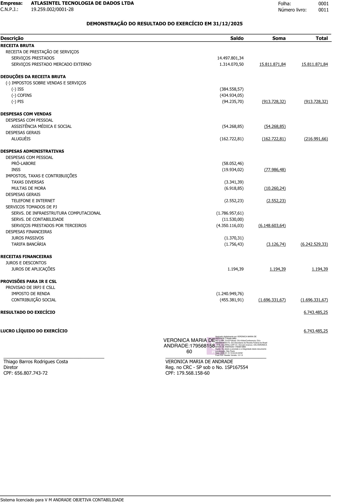

Registro e relatório não fecham
O TSE registra campo a partir de 25/06 e 5.000 entrevistas; o PDF divulgado fala em 26/06 e 4.999 respondentes. Pequeno? Sim. Mas auditoria começa por bater papel com papel.
A pesquisa nova da Atlas/Bloomberg não é só “estranha”. Ela troca de registro no rastro da crise Michelle-Flávio, publica 45 páginas mas deixa blocos inteiros do questionário sem top-line, inverte a tesoura de gênero do voto e — o sintoma mais silencioso — faz o “não sei” quase desaparecer: 0,3% no medo, 1,0% na rejeição, 3,6% na identidade política. É o retrato de um eleitorado hiperengajado online, vendido como margem de 1 ponto.
Não dá para jogar tudo fora automaticamente, porque o voto presidencial aparece antes dos blocos Michelle, Banco Master/Wagner e EUA/Trump. Mas também não dá para tratar isso como pesquisa limpa. O uso correto é: sinal fraco de eleitor hiperengajado online, mapa das narrativas que a Atlas quis testar e alerta sobre nichos digitais; nunca bússola única de campanha.
O TSE registra campo a partir de 25/06 e 5.000 entrevistas; o PDF divulgado fala em 26/06 e 4.999 respondentes. Pequeno? Sim. Mas auditoria começa por bater papel com papel.
O registro admite desvios finais de até 1 p.p. por variável. O relatório passa disso em 16-24, 45-59, Fundamental e Médio.
Na Atlas, Flávio tem 43,5% entre mulheres e 29,1% entre homens. Datafolha e Nexus recentes mostram o padrão oposto: homens são a fortaleza de Flávio.
Mesmo nessa amostra torta, Flávio continua sendo o adversário mais competitivo de Lula no 2º turno: 42,3% contra 48,8%.
Renan Santos marca 7,8% no cenário principal e 37,9% entre jovens de 16 a 24. O Partido Missão aparece com 7,1% de preferência partidária.
Receita bruta de R$ 15,8 mi e lucro líquido de R$ 6,74 mi em 2025. Isso não prova viés; mostra incentivos e escala.
Só 0,3% não sabem quem os assusta mais, 1,0% não rejeitam ninguém e 3,6% não têm identidade política. Na Quaest, 56% não sabem em quem votar. Escolha forçada online apaga o eleitor indeciso.
Os dois maiores partidos do Centrão (PP e União Brasil) somam 0,6% de preferência; o Partido Missão, sem histórico eleitoral, marca 7,1%. O sistema partidário aparece de ponta-cabeça.
Minha leitura: a Atlas captou um Brasil online muito engajado, com bolsonarismo familiar, bolsonarismo anti-PT, direita MBL/Missão e respondentes atraídos por pauta política. Isso pode ser útil para guerra digital. Para calibrar voto nacional, é veneno se usado sozinho.
O registro final BR-04582/2026 declara recursos próprios, custo de R$ 75 mil, campo de 25 a 30 de junho, 5.000 entrevistas e quotas com tolerância final de 1 p.p. O relatório público começa a coleta em 26/06, usa 4.999 respondentes e publica uma composição que passa da tolerância em alguns cortes.
| Item | Registro TSE | Relatório Atlas | Leitura |
|---|---|---|---|
| Registro | BR-04582/2026 | BR-04582/2026 | bate |
| Campo | 25/06 a 30/06 | 26/06 a 30/06 | 1 dia some |
| Entrevistas | 5.000 | 4.999 | diferença de 1 caso |
| Contratante/pagante | AtlasIntel | não destacado | autofinanciada |
| Valor | R$ 75.000,00 | não destacado | relevante para incentivo |
O ponto não é que uma entrevista ou um dia derrube a pesquisa. O ponto é que a versão pública deve bater com o registro, especialmente quando a margem vendida é de apenas 1 p.p.

Em 28/06 já havia notícia pública citando uma Atlas registrada como BR-03448/2026, com 5 mil eleitores até 29/06. O registro que saiu na pesquisa final é outro: BR-04582/2026, com questionário trazendo bloco Michelle-Flávio após o vídeo da crise familiar.
Raphael Nishimura, metodólogo de surveys e estatístico, apontou nas capturas anexadas que o registro anterior teria sido cancelado e substituído para incluir perguntas sobre Michelle. Isso precisa entrar como alerta: não prova manipulação do resultado, mas exige explicação pública da Atlas.

O questionário tem 63 perguntas. O relatório público mostra voto, governo, rejeição, medo Lula-Flávio, identidade política e partido. Mas deixa sem top-line blocos politicamente valiosos: Michelle versus Flávio, Jaques Wagner/Banco Master, EUA/Trump/tarifas e parte da demografia/voto passado.
| Bloco | Perguntas | Status público | Risco |
|---|---|---|---|
| Voto presidencial | Q1-Q7 | publicado | mais aproveitável |
| Aprovação, confiança, problemas e economia | Q8-Q24 | parcial | relatório edita o retrato |
| Michelle x Flávio | Q26-Q34 | omitido | bloco central da crise |
| Banco Master / Jaques Wagner | Q35-Q41 | omitido | pode medir dano ao PT |
| EUA, Trump e tarifas | Q42-Q50 | omitido | alto valor narrativo |
| Demografia e voto 2022 | Q51-Q63 | parcial | sem matriz completa |

Perguntar e não publicar é uma forma de poder. O instituto fica com o mapa completo do campo de batalha; o público recebe só o recorte. Para pesquisa eleitoral registrada, isso é péssimo padrão de transparência.
Sexo e região ficam perto do TSE. Escolaridade, usando a variável PNAD trimestral VD3004, está perto do benchmark. O problema duro é outro: o relatório não cumpre plenamente o próprio alvo registrado em idade/escolaridade, e a renda replica bem a PNAD nominal antiga, mas fica pobre demais quando as mesmas faixas são comparadas em reais de 2026.
| Corte | Quota TSE | Relatório | Delta |
|---|---|---|---|
| Mulher | 52,8% | 52,3% | -0,5 |
| Homem | 47,2% | 47,7% | +0,5 |
| 16-24 | 12,6% | 10,9% | -1,7 |
| 25-34 | 19,0% | 18,6% | -0,4 |
| 35-44 | 19,8% | 20,4% | +0,6 |
| 45-59 | 25,4% | 27,2% | +1,8 |
| 60+ | 23,1% | 22,9% | -0,2 |
| Fundamental | 33,8% | 34,9% | +1,1 |
| Médio | 40,7% | 39,5% | -1,2 |
| Superior | 25,5% | 25,6% | +0,1 |
O registro diz que desvios finais de até 1,0 p.p. seriam admissíveis. A tabela acima usa os números do próprio registro e da página de perfil da amostra.

| Região | Atlas | TSE 05/2026 | Delta |
|---|---|---|---|
| Sudeste | 41,4% | 42,1% | -0,7 |
| Nordeste | 28,5% | 27,6% | +0,9 |
| Sul | 14,6% | 14,5% | +0,1 |
| Norte | 8,3% | 8,3% | 0,0 |
| Centro-Oeste | 7,2% | 7,6% | -0,4 |
Base local: data/outputs/tse_eleitorado_perfil.sqlite, geração TSE 01/05/2026, Brasil sem exterior.
| Faixa | Atlas | PNAD adultos | PNAD domicílios |
|---|---|---|---|
| R$0-R$2.000 | 22,4% | 19,9% | 26,2% |
| R$2.000-R$3.000 | 17,6% | 11,7% | 12,7% |
| R$3.000-R$5.000 | 23,2% | 26,7% | 25,7% |
| R$5.000-R$10.000 | 23,4% | 25,7% | 21,8% |
| Acima de R$10.000 | 13,3% | 16,0% | 13,5% |
PNAD anual padrão, renda domiciliar total efetiva deflacionada para 03/2026. Em valores nominais brutos, a PNAD praticamente reproduz as quotas Atlas; em reais atualizados, a faixa R$2-3 mil fica inflada e a alta renda fica comprimida por pessoas. Adultos 16+ são o benchmark principal; domicílios entram como sensibilidade.
Andrei Roman tentou defender crosstabs estranhos dizendo que grupos pequenos devem ter números esquisitos. Raphael Nishimura ironizou isso. E ele tem razão no ponto principal: homem e mulher não são subgrupos pequenos numa amostra de quase 5 mil casos.
Aproximação AAS: a diferença Flávio mulheres-homens de 14,4 p.p. teria margem de diferença em torno de 2,6 p.p. antes de efeito de desenho. Mesmo dobrando a variância, continua enorme. Isso não é “célula pequena”; é sintoma de seleção, peso ou instabilidade.

Esse número sozinho já sugere amostra de jovem politizado online. Pode ser sinal de bolha MBL/Missão, não intenção nacional estabilizada.
Um partido recém-registrado, presidido por Renan Santos, aparecer quase colado em NOVO+PSOL é sinal de sobre-representação de audiência política digital.
No Datafolha de junho, Lula vence mulheres por 52 a 37 e Flávio vence homens por 50 a 41. A Nexus também coloca homens como força de Flávio. A Atlas inverte a tesoura.

A tesoura de gênero é o alarme mais alto, mas não o único. A amostra deixa quatro marcas típicas de um eleitorado digital hiperengajado — e nenhuma aparece destacada no PDF público. Juntas, elas explicam por que os cruzamentos internos gritam “internet”.
Em pesquisa presencial ou telefônica, a não-resposta em perguntas de atitude costuma ficar entre 5% e 15%. No recrutamento digital de escolha forçada da Atlas, o “não sei” some — e some junto a parcela mais real do eleitorado: a que ainda não decidiu. A Quaest, no espontâneo de junho, achou 56%.
PP e União Brasil estão entre os maiores partidos do país em prefeitos e deputados. Aparecerem com 0,0% e 0,6% de preferência enquanto o Partido Missão, sem histórico eleitoral, marca 7,1% é assinatura de audiência digital ativista — não de eleitorado nacional.
A Atlas publicou, na prática, uma prévia da sucessão bolsonarista: o pai à frente do filho, e Michelle como o nome mais fraco. No cenário sem homem Bolsonaro, Michelle faz só 19,3% no 1º turno e a direita se fragmenta (Zema 8,6, Renan 8,1, Caiado 8,1). Sozinha, ela não consolida o voto da família.
Entre quem votou em Jair Bolsonaro no 2º turno de 2022, Flávio retém cerca de 74,8% no cenário principal. Ou seja: 1 em cada 4 bolsonaristas de 2022 não migra para Flávio — escorre para Renan/Missão e para o branco/nulo.
O filho aparece mais rejeitado que o pai (53,0% x 45,2%) e até mais que Michelle (43,2%). É consistente com o dano reputacional do bloco Master/Dark Horse recair sobre Flávio — justamente o bloco que o PDF não top-lineou.
Bônus estatístico: entre evangélicos, a Atlas dá quase empate (Lula 39,7 x Flávio 42,9). A Nexus do mesmo mês dá Flávio 59 x 34. Vinte e cinco pontos de diferença no mesmo eleitorado, no mesmo mês — mais um sintoma de amostra atípica, não de eleitorado real.
Apesar dos cruzamentos tortos, o topo de linha da Atlas conversa com o mercado. As quatro pesquisas de junho colocam Lula preso abaixo de 50, Flávio como o adversário mais competitivo e a disputa aberta dentro da margem. A ruptura está só nos recortes.
| Pesquisa (jun/2026) | Lula | Flávio | Gap | Br/nulo | Fortaleza de Flávio |
|---|---|---|---|---|---|
| AtlasIntel | 48,8 | 42,3 | +6,5 | 8,9 | MULHERES (43,5 x 29,1 H) |
| Nexus/BTG | 49 | 43 | +6 | 8 | homens (49 x 42) |
| Datafolha | 47 | 43 | +4 | — | homens (50 x 41) |
| Quaest | 44 | 38 | +6 | 14 | homens |
Direção idêntica no agregado; a inversão está só no gênero. É por isso que a Atlas serve como termômetro de narrativa e alerta de nicho digital — nunca como bússola única de voto nacional.
A DRE não prova manipulação. Ela prova que a Atlas é uma operação comercial lucrativa, com escala, infraestrutura e serviços de terceiros relevantes. Isso importa porque pesquisa autofinanciada e divulgada publicamente também é produto de marca.
| Conta | Valor | Leitura |
|---|---|---|
| Receita bruta | R$ 15,81 mi | operação relevante, não artesanal |
| Serviços no exterior | R$ 1,31 mi | receita internacional |
| Infraestrutura computacional | R$ 1,79 mi | custo digital alto |
| Terceiros/PJ | R$ 4,35 mi | dependência operacional externa |
| Lucro líquido | R$ 6,74 mi | margem líquida de 42,6% |
| Custo da pesquisa | R$ 75 mil | 0,47% da receita; 1,11% do lucro |
O custo da pesquisa é pequeno perto do lucro anual. Logo, o incentivo econômico não é “recuperar o custo da pesquisa”; é reputação, produto, narrativa e presença de mercado.

A Atlas gosta de vender precisão. O segundo turno de 2022 é o teste simples: a última Atlas deu Lula 53,4% x Bolsonaro 46,6% nos válidos, com margem anunciada de 1 p.p. O TSE apurou 50,90% x 49,10%. A direção acertou; a precisão vendida não.
| Fonte | Lula válidos | Bolsonaro válidos | Margem Lula-Bolsonaro | Erro da margem | Leitura |
|---|---|---|---|---|---|
| TSE 2022 | 50,90% | 49,10% | +1,8 | - | resultado oficial |
| Atlas, 29/10/2022 | 53,4% | 46,6% | +6,8 | +5,0 | fora da margem de 1 p.p.; candidato por candidato erra 2,5 p.p. |
| Datafolha, 29/10/2022 | 52,0% | 48,0% | +4,0 | +2,2 | candidato por candidato fica dentro de ±2 |
| Paraná, 29/10/2022 | 50,4% | 49,6% | +0,8 | -1,0 | foi a leitura mais próxima entre as citadas |
Dizer que Atlas “acertou muito” em 2022 é meia verdade. Acertou vencedor. Errou feio a distância. Quando o instituto anuncia margem de 1 ponto, a régua tem de ser a régua que ele mesmo vende.
Use a Atlas como detector de cheiro, não como GPS. Ela aponta o que a bolha política conectada está respondendo, não uma verdade limpa sobre o eleitorado nacional.
Lula fica abaixo de 50 no 2º turno e Flávio ainda é o adversário mais competitivo. Isso conversa com Datafolha, Nexus e Quaest: a eleição está aberta, mas difícil.
Não faça estratégia feminina com base nessa inversão. O problema real de Flávio em pesquisas melhores é reduzir rejeição e medo entre mulheres.
Não é voto consolidado, mas é ruído real de direita anti-sistema/anti-Bolsonaro entre jovens online. Se ignorar, vira vazamento de energia digital.
Exigir n efetivo por célula, distribuição dos pesos, resultados completos das 63 perguntas, histórico do registro anterior e matriz de voto por renda/gênero/idade.
A Atlas quis medir Michelle-Flávio. A campanha deve fechar a ferida sem transformar o tema em novela. A base odeia desorganização familiar exposta.
A estratégia robusta continua a mesma dos relatórios anteriores: segurança, custo de vida, saúde e escola. Menos performance agressiva; mais redução de risco reputacional.
Diagnóstico final: pesquisa contaminada, mas não inútil. O lixo está nos cruzamentos e na opacidade; o ouro está em mostrar quais narrativas estão sendo testadas contra Flávio e onde a direita jovem conectada pode estar vazando para Renan/Missão.
Todos os PDFs da rodada de junho foram movidos para data/pesquisas/atlas/2026-06-30/. As imagens usadas neste relatório estão em docs/img/atlas_260626/.